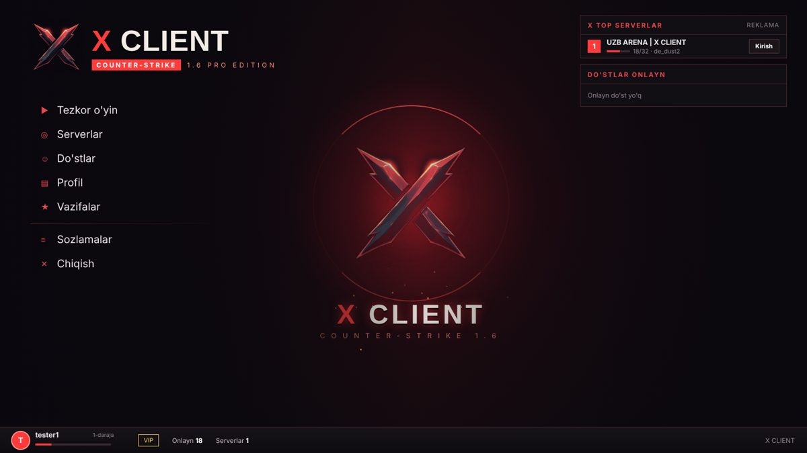
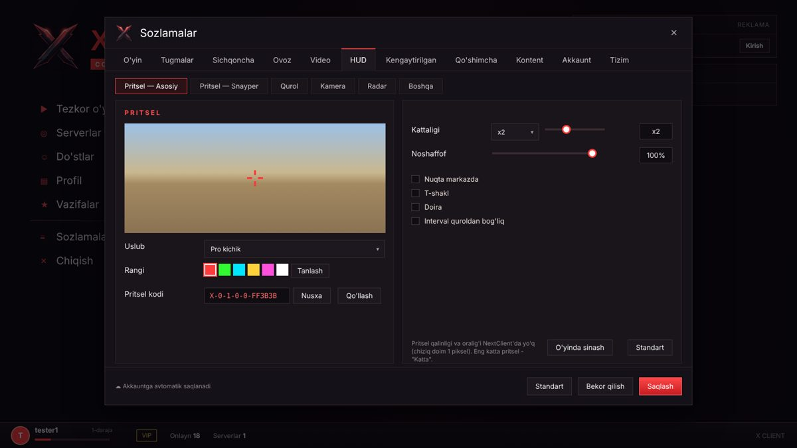
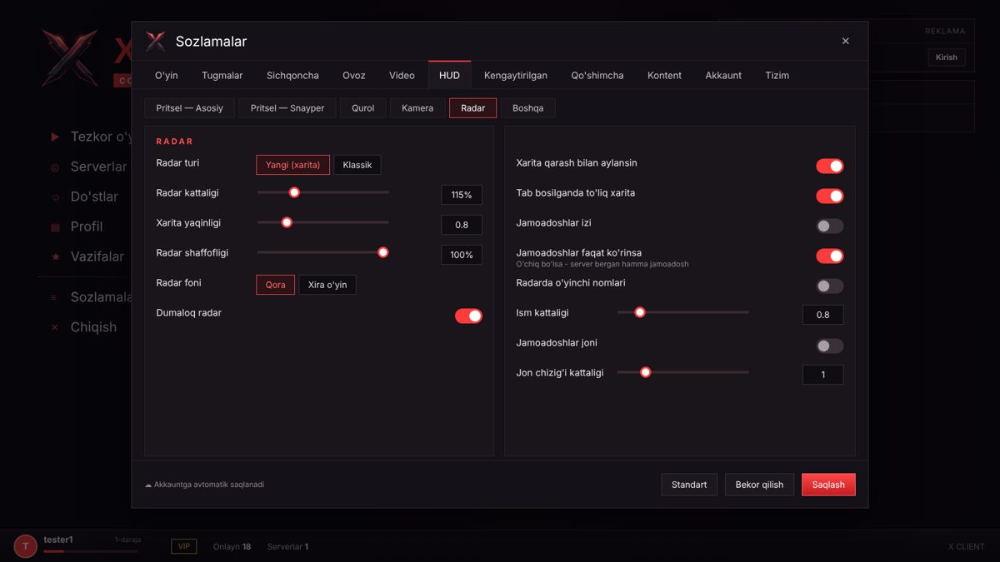
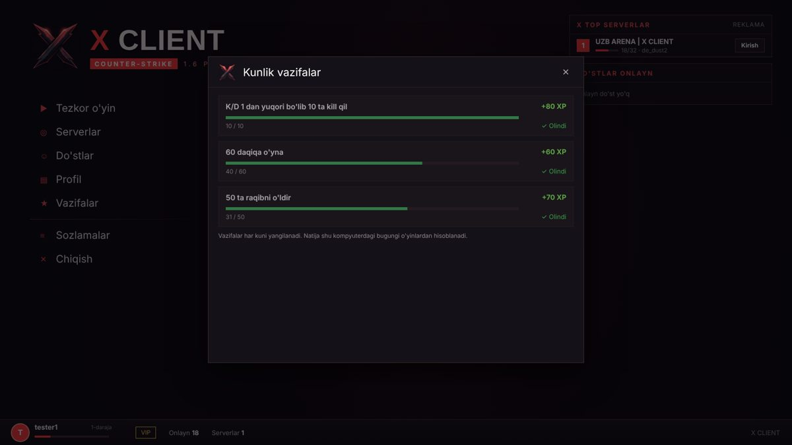

X CLIENT
Counter-Strike 1.6 uchun
Zamonaviy menyu, avtomatik yangilanish, pro sozlamalar, do'stlar, kunlik vazifalar va tiniq spray — hammasi bitta launcherda.
Bepul yuklab olishImkoniyatlar
O'yinni ochishingiz bilan hammasi tayyor — hech narsa sozlash shart emas.
⟳Avto-yangilanishYangi versiya o'zi yuklanadi va o'rnatiladi.
◎ServerlarTOP, BOOST, VIP serverlar, ping, bayroqlar, xarita rasmlari.
✚Pritsel va HUDRang, o'lcham, uslub, HUD kattaligi, radar va kamera.
⚡PRO CFGBir bosishda lag'siz internet va to'g'ri otdacha.
★Kunlik vazifalarVazifalarni bajaring, XP va daraja oling.
☺Do'stlarKim qaysi serverda — bir bosishda qo'shiling.
☁Bulutga saqlashSozlamalar har kompyuterda bir xil.
♪Ovozlar va sprayMenyu ovozlari, musiqa va X CLIENT spreyi.
Imtiyozlar
X CLIENT bilan o'ynaganlar oladigan qulayliklar.
Launcher ichida nimalar bor
Barcha funksiyalarning to'liq ro'yxati.
Ko'rinishi
O'yin ichidagi menyu.




O'rnatish — 3 qadam
Bir daqiqadan kam vaqt oladi.
Yuklab olingYuqoridagi tugmani bosing va zip faylni saqlang.
OchingZipni CS 1.6 papkasiga (cstrike.exe yonida) yoki istalgan joyga oching.
XCLauncher.exe ni ishga tushiringIsh stolida X CLIENT yorlig'i paydo bo'ladi. O'yin yo'q bo'lsa, o'zi o'rnatadi.
Talablar
- Windows 7, 8, 10 yoki 11
- Internet (yangilanish uchun)
- CS 1.6 (bo'lmasa o'zi o'rnatadi)
Ko'p so'raladigan savollar
Windows "noma'lum dastur" deb ogohlantirsa?
Launcher raqamli imzosiz, shuning uchun SmartScreen ogohlantirishi mumkin. "Подробнее / More info" → "Выполнить в любом случае / Run anyway" ni bosing.
Serverlarda ban yoki kick bo'lmaydimi?
Yo'q. X CLIENT cheat emas: u faqat menyu, sozlamalar va yangilanishni boshqaradi, o'yinning o'z sozlamalaridan foydalanadi.
Pullikmi?
Yo'q, butunlay bepul.